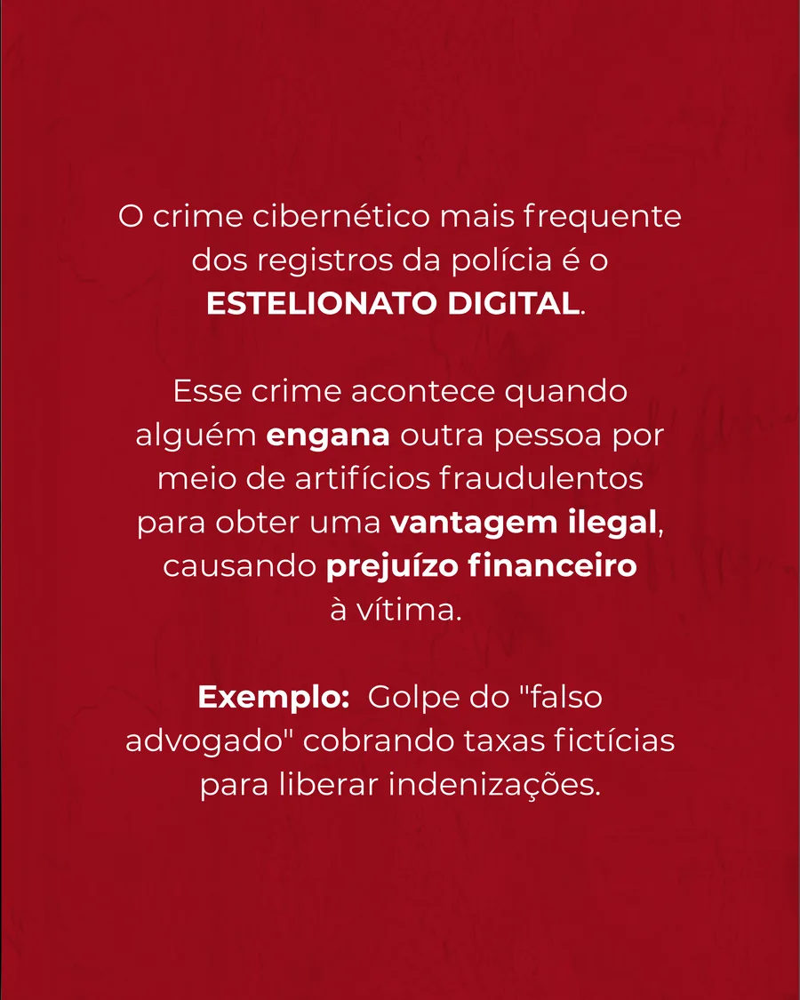
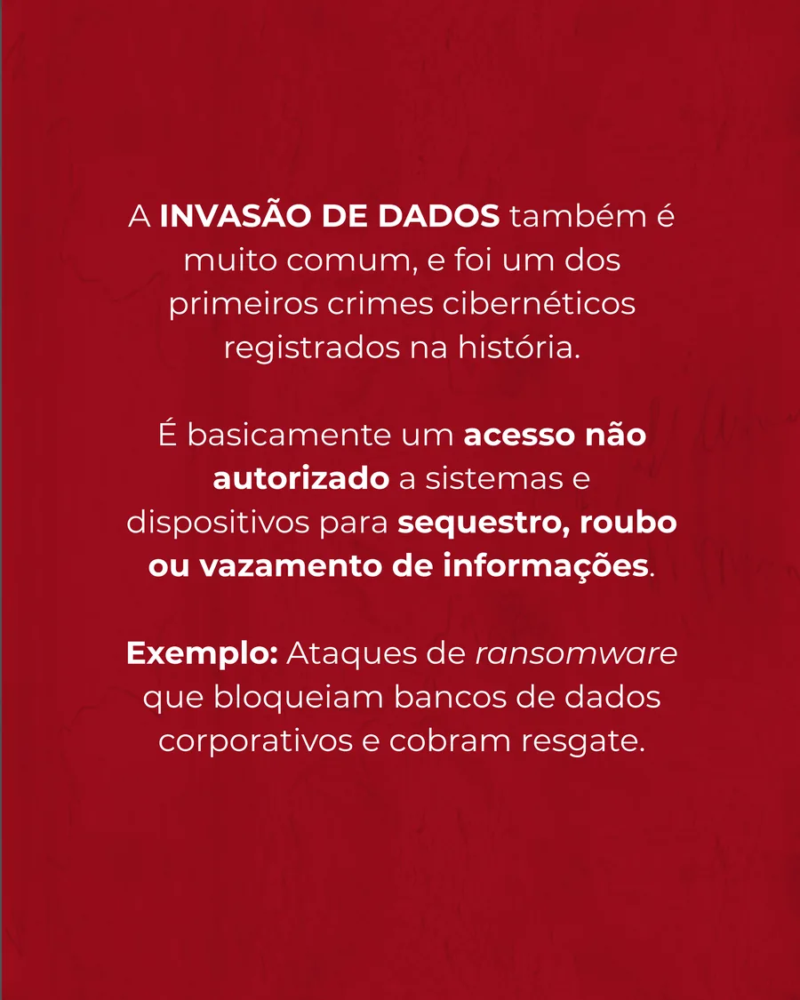
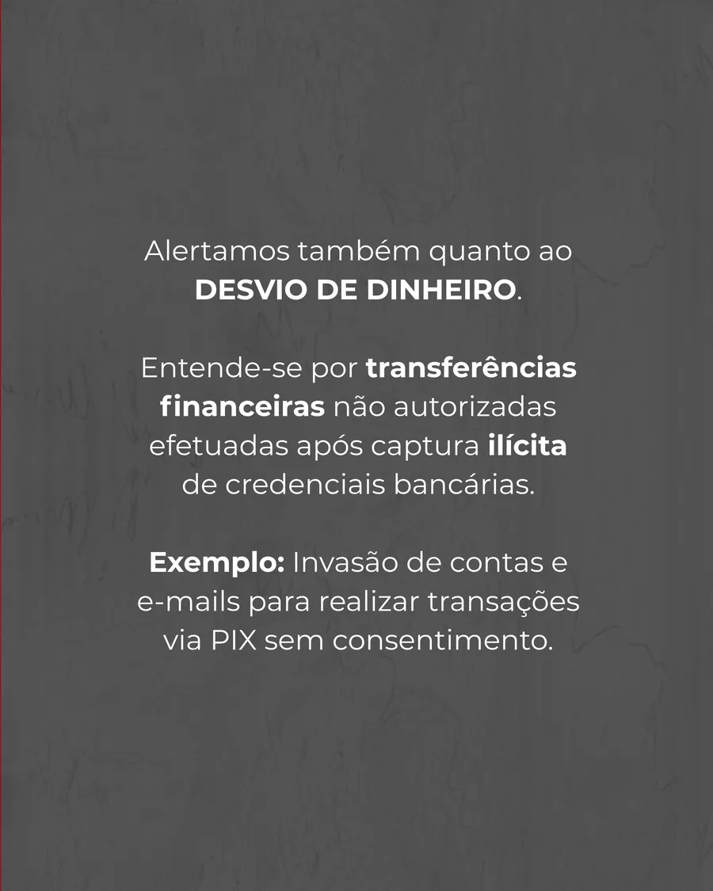
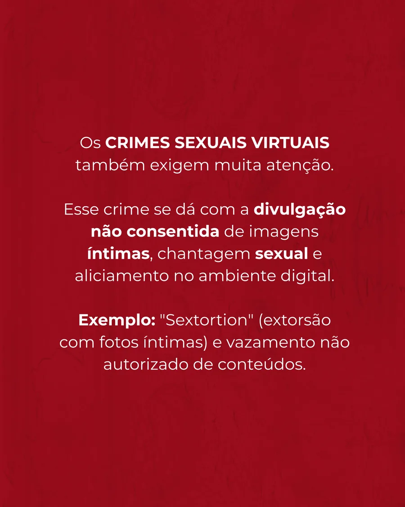

Reportagem especial
Das ruas às telas
A migração dos crimes do mundo físico para o meio digital
O arquivo de áudio entra aqui assim que a narração estiver finalizada.
00 Abertura
O crime que antes dependia de uma esquina, de um olho no bolso e de um braço rápido encontrou um caminho mais barato, mais discreto e sem fronteira. Esta reportagem acompanha esse deslocamento: o que muda quando a abordagem deixa o corpo a corpo e passa a acontecer dentro de uma tela.
01 Das ruas às telas
Das ruas
às telas
O mesmo medo, outro endereço. Como o crime de rua se reorganizou quando a vítima passou a estar do outro lado do vidro.
Parágrafo de abertura do bloco. Aqui entra o texto do arquivo do Drive, com a cena de entrada, o personagem que conduz a narrativa e a primeira virada da reportagem. O corpo do texto usa Montserrat, entre 18 e 19 pixels, com entrelinha generosa para leitura longa em tela.
Segundo parágrafo do bloco. Trechos que precisam de destaque aparecem em vermelho, sem fundo, para manter a página limpa. Números, datas e nomes de instituições seguem o mesmo tratamento.
“Espaço reservado para a citação de abertura do bloco.”
Nome do entrevistado — função
Terceiro parágrafo, com o desenvolvimento do bloco e o encaminhamento para o próximo trecho da reportagem.
Continuação do bloco depois do infográfico. Este espaço está preparado para receber também vídeo, galeria ou gráfico interativo, se for o caso.
02 Golpes virtuais
Golpes
virtuais
A engenharia social como método: o golpe que não precisa de arma, só de confiança e alguns segundos de distração.
Parágrafo de abertura do bloco de golpes virtuais. Substituir pelo texto do Drive, mantendo a estrutura de parágrafos e os destaques em vermelho.
Segundo parágrafo. Dados, valores e percentuais devem vir com a fonte creditada no fim do bloco ou na legenda do gráfico correspondente.






FIG. 05 — Série publicada nas redes do projeto. Arte: arquivo da reportagem.
Continuação do bloco. O terceiro parágrafo retoma a narrativa depois do infográfico e prepara a passagem para o bloco seguinte.
03 Cyberbullying
Cyber
bullying
A violência que não termina quando o sino toca: o que muda quando a humilhação ganha plateia permanente.
Parágrafo de abertura do bloco de cyberbullying. Substituir pelo texto do Drive.
Segundo parágrafo do bloco, com os relatos e o contexto apurado pela reportagem.
“Espaço reservado para a citação central deste bloco.”
Nome do entrevistado — função
Terceiro parágrafo, fechando o bloco e apontando para o tema da proteção de dados.
04 Proteção de dados
Proteção
de dados
O que a lei alcança, o que fica de fora e o que ainda depende do usuário entender o próprio rastro.
Parágrafo de abertura do bloco de proteção de dados. Substituir pelo texto do Drive.
Segundo parágrafo. Aqui podem entrar números da LGPD, pedidos de titulares e dados de incidentes, sempre com fonte.
Parágrafo de encerramento da reportagem, antes do podcast.
06 No Instagram
Acompanhe a apuração
em @das_ruas_as_telas
A cobertura da reportagem continua na conta do Instagram: cards explicativos sobre os crimes digitais mais comuns, bastidores da apuração e atualizações sobre o tema.
Seguir @das_ruas_as_telas